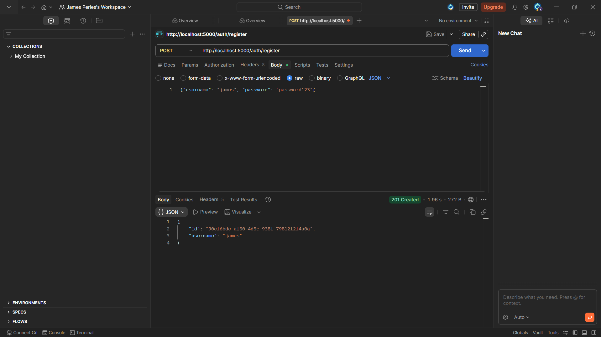
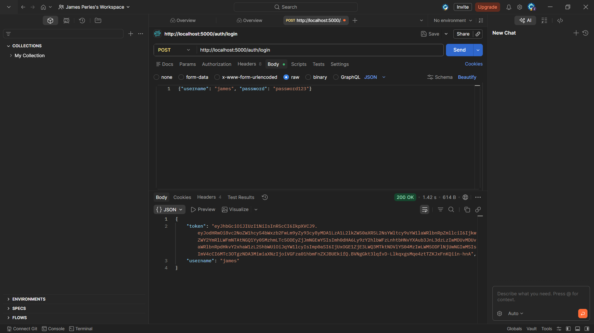
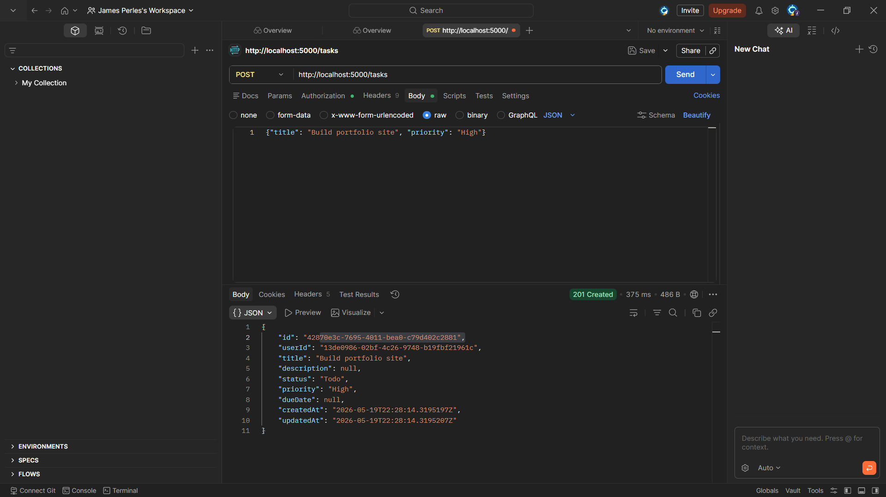
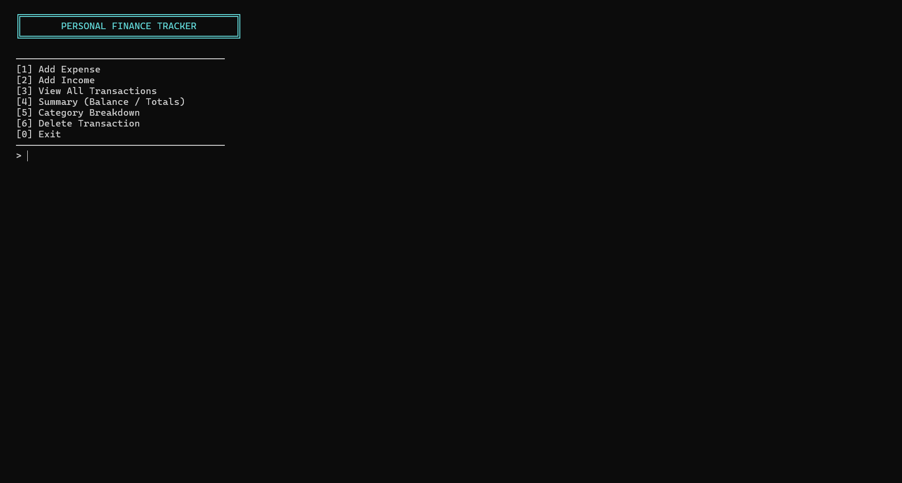
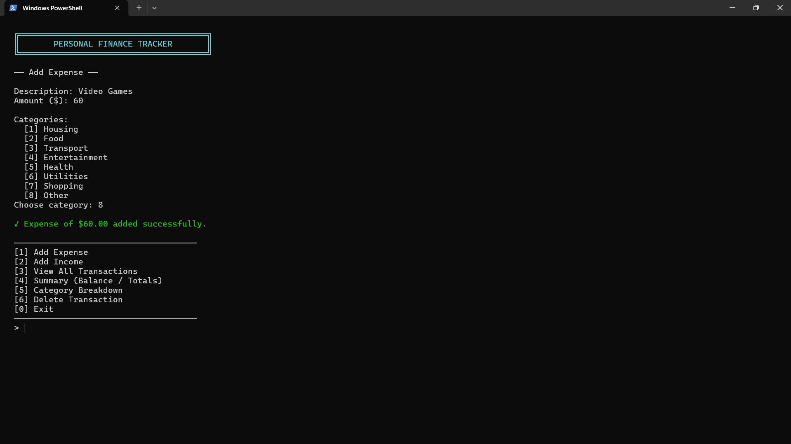
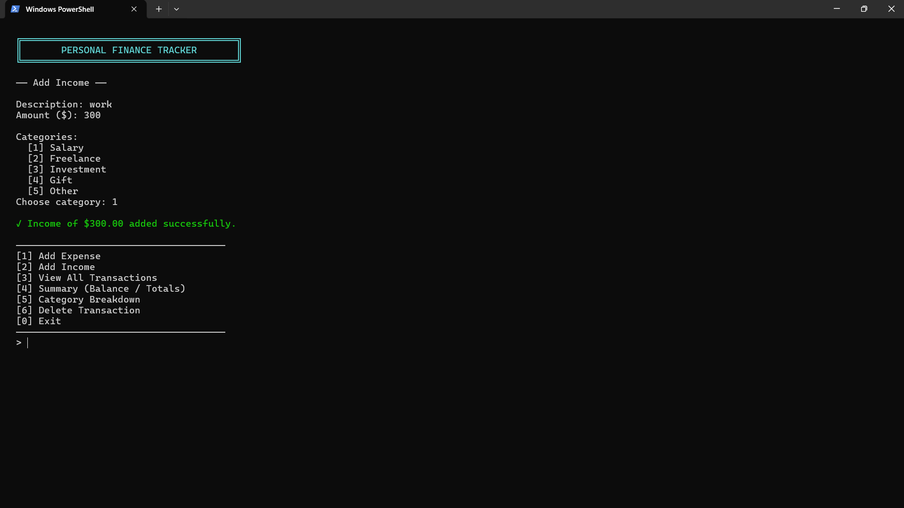
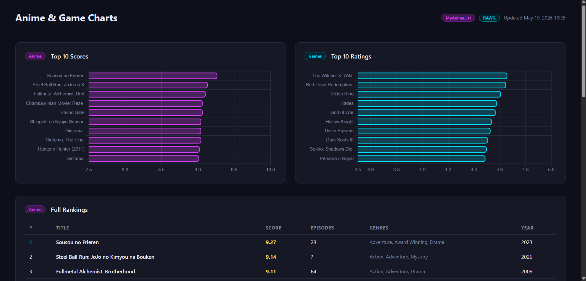

A full REST API for task management with user authentication, built from scratch in C# using ASP.NET Core. Users can register, log in, and manage their own tasks with full create, read, update, and delete functionality. Tasks support filtering by status and priority, pagination, and a statistics endpoint that returns aggregated breakdowns of a user's workload.
// Login: validate credentials, return signed JWT app.MapPost("/auth/login", (LoginRequest req, UserRepository users) => { var user = users.GetByUsername(req.Username); if (user is null || !users.VerifyPassword(req.Password, user.PasswordHash)) return Results.Unauthorized(); var token = GenerateToken(user.Id, user.Username, jwtKey, jwtIssuer); return Results.Ok(new { token, user.Username }); }); // Get tasks: filter by status/priority, paginate results app.MapGet("/tasks", [Authorize] (ClaimsPrincipal principal, TaskRepository tasks, string? status, string? priority, int page = 1, int pageSize = 10) => { var userId = principal.FindFirstValue(ClaimTypes.NameIdentifier)!; var userTasks = tasks.GetByUser(userId); if (status is not null) userTasks = userTasks.Where(t => t.Status.Equals(status, StringComparison.OrdinalIgnoreCase)).ToList(); var total = userTasks.Count; var paged = userTasks.Skip((page - 1) * pageSize).Take(pageSize).ToList(); return Results.Ok(new { total, page, pageSize, data = paged }); });



A console application for tracking personal income and expenses, built in C#. Transactions are categorized across 8 expense types and 5 income types, and persist between sessions using JSON file storage. The app generates real-time summaries showing net balance, monthly breakdowns, and an ASCII bar chart of spending by category.
// ASCII bar chart scaled to highest category private void ShowCategoryBreakdown() { var grouped = _transactions .Where(t => t.Type == TransactionType.Expense) .GroupBy(t => t.Category) .Select(g => new { Category = g.Key, Total = g.Sum(t => t.Amount) }) .OrderByDescending(g => g.Total) .ToList(); var max = grouped.Max(g => g.Total); foreach (var g in grouped) { var barLen = (int)((g.Total / max) * 30); var bar = new string('█', barLen); Console.WriteLine($" {g.Category,-15} {bar,-30} ${g.Total:F2}"); } } // Persist all transactions to disk as JSON private void SaveData() { var json = JsonSerializer.Serialize(_transactions, new JsonSerializerOptions { WriteIndented = true }); File.WriteAllText(_dbPath, json); }



A Python data pipeline that fetches live top anime rankings from the MyAnimeList API and top Steam game statistics from SteamSpy, normalizes and displays the data in a formatted terminal view, and generates a self-contained HTML dashboard with interactive Chart.js bar charts that opens automatically in the browser.
def fetch_top_anime(limit: int = 20) -> list[dict]: url = f"https://api.jikan.moe/v4/top/anime?limit={limit}" try: r = requests.get(url, timeout=10) r.raise_for_status() data = r.json() return [ { "rank": i + 1, "title": a["title"], "score": a.get("score", 0) or 0, "genres": ", ".join( g["name"] for g in a.get("genres", [])[:3] ), "members": a.get("members", 0), } for i, a in enumerate(data.get("data", [])) ] except requests.RequestException: return get_fallback_anime() # graceful fallback

This portfolio website, built from scratch using HTML, CSS, and vanilla JavaScript. Features a tab-based project navigation system with URL hash routing, scroll-triggered reveal animations using the Intersection Observer API, animated skill bars, and a fully responsive layout. No frameworks or build tools — just hand-written code.
// Tab activation with URL hash routing function activateTab(tabId, updateHash = true) { tabBtns.forEach(b => b.classList.remove('active')); tabContents.forEach(c => c.classList.remove('active')); const btn = document.querySelector(`[data-tab="${tabId}"]`); const content = document.getElementById(tabId); btn?.classList.add('active'); content?.classList.add('active'); if (updateHash) { const hash = tabToHash[tabId]; history.pushState(null, '', hash ? '#' + hash : location.pathname); } } // Scroll reveal using Intersection Observer const revealObs = new IntersectionObserver((entries) => { entries.forEach((e, i) => { if (e.isIntersecting) { setTimeout(() => e.target.classList.add('visible'), i * 80); revealObs.unobserve(e.target); } }); }, { threshold: 0.12 }); document.querySelectorAll('.reveal').forEach(el => revealObs.observe(el));